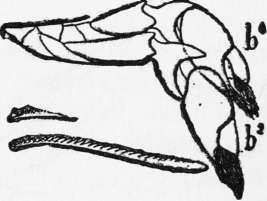
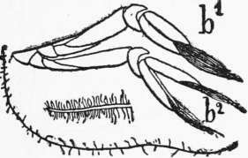

Modifications Of Instincts By Mutations
Description
This section is from the book "The Psychic Life Of Insects", by E. L. Bouvier. Also available from Amazon: The Psychic Life of Insects.
Modifications Of Instincts By Mutations
The chemical modifications of the organism are due principally to the exercise of the muscles, of the digestive tube, of the nervous system,-in a word, the different tissues which one qualifies as somatic in distinction from the germinative cells which are specially intended for use in reproduction of the individual. In order that the acquired modifications should pass to the descendants it is necessary, evidently, that they should have affected the reproductive cells, but this action of the soma on the germ is absolutely denied by Weismann1 and by the neo-Darwinians who constitute his school. For these biologists "all changes come from primary modifications of the germ," modifications which bear upon "the molecular arrangement'1 of the germs or upon "the chemical composition of the molecules" or "upon both at the same time. . . . Variations in- the molecular structure of the germinative cells are always present in each species and may be increased and fixed if their results are useful." Thus Weismann rejects the inheritance of acquired characters, accepted by Darwin and by Lamarck, and of the Darwinian theory accepts only natural selection, limiting the conception which belongs to it to changes occurring in the germinative cells.
1 A. Weismann, Essays on Heredity and Natural Selection, 1892. Translated by H. de Varigny.
The school of Weismann contests the observations and experiments which tend to establish the heredity of acquired characters (for example, the cases observed by Brown-Séquard following the lesions occurring with guinea-pigs are due perhaps to an infection) or explains them by primitive modification of the germ cells. They explain also notably the inheritance of habits, for, according to Weismann, it is "totally erroneous" to believe "that the origin and the variations of instincts depend upon the usage of certain groups of muscles and of nerves in the course of the life of the individual. ' '1 However, the celebrated biologist avows that his theory of the primitive modifications of the germ appears insufficient to account for "changes which present themselves as direct consequences of a change in external conditions. ' ' This is a considerable gap, because the influences of the surroundings have been able to play the essential role in the evolution of animals, and these primary factors of evolution, as Giard says, are just the agents pointed out by Lamarck. Do we not have, then, the influence of the soma on the germ? Weismann recognizes that a well-nourished plant will give larger seeds, richer in nutriment, and that these will increase more and more if the plant follows the same regimen during the generations. "But," he says, "this will not in any way be an example of the hereditary transmission of acquired characters; it would be only the direct influence of the better food, during growth, on the germinative cells." The distinction is subtle, for one cannot see how a better food can act upon the germs without the help of the somatic cells ; there is no other way of accomplishing this. If this be so, the exchanges between the soma and the germ are no longer, as Weismann characterizes them, a simple transformation of "the molecules of a foreign body" into the molecules of the germ cells. The first transform themselves, without doubt, but they have also transformed the second.
1 In his beautiful work on The Genesis of Species, Monsieur Cuénot is less positive: "Many authors have thought, what I can hardly believe, that the instincts of insects are intelligent fixed and inherited characters."
In a penetrating study, published in his 6 ' Trans-formist Controversies," Giard has victoriously combated the neo-Darwinian theory and has cited numerous examples which appear to establish beyond doubt the heredity of acquired characters, Undoubtedly the Weismann school will not be at all embarrassed for a reply that these cases involved direct action on the germ cells and not changes in these cells by the action of the cells of the soma ; and surely they will give the same explanation to the hereditary phenomena which we have cited, since they absolutely deny the inheritance of acquired characters. Let us confine ourselves to the facts, that animals-insects in the present consideration-have modified their actual habits and that they have transmitted these changed habits to their descendants. These facts are incontestable, while one can justly dispute the contention that they are the direct and specific product formerly acquired "by selection, and that they have their basis, not in any change in the individual life, but in variations in the germ,"- variations which cannot be verified, since they originated so far back.
If it is true that an animal can modify its habits and acquire new ones, it is no less certain that these habits can become hereditary only when they have provoked permanent modifications in the germ cells. The same observation may be applied to structural changes, and it was easy for Weismann to establish in opposition to Detmer that the modifications undergone by the dorso-ventral shoots of Thuja occidentalis offer no proof of the heredity of acquired characters, since they are entirely changed when one turns the shoots the other way. The individual can acquire new habits, but all these new habits are not transmitted to posterity, because they manifest themselves in the form of somatic reactions and because somatic reactions do not necessarily modify the germinative cells.
On the other hand, it is certain that there are variations which appear suddenly in the course of species evolution which are fixed by heredity, and which natural selection has maintained when they have proved to be advantageous. A propitious field for these mutations is offered by the social insects,-that is to say by the termites, the ants, the wasps, and the bees. We know that these social insects form families, sometimes extraordinarily numerous, in which the fertile individuals confine themselves to reproductive functions, while the work of the society is accomplished by sterile neuters, which at times, however, give birth to males. It is with the neuter individuals that we observe the highest instincts and the most perfect industry, and, as these individuals are generally incapable of reproduction and consequently not able to transmit the new qualities which they have acquired by experience, it must be admitted that the evolution of social instincts is produced by mutation,-that is to say, by modifications which the germinative cells of the females have undergone and which have reacted suddenly upon a progeny subject to natural selection. Darwin has cited before any other this topical example to which many biologists have returned. Aside from the fact that in certain cases the neuters can transmit their characters through the males which they produce, one can argue against this that the females capable of establishing a colony are reduced to their own labor and fulfil all the social functions until the time when the neuters are sufficiently numerous, and that during this period they can acquire new habits transmissible to their progeny. The objection is not without value, and probably certain kinds of instincts may be involved in this way, but it must be observed that the females almost always are confined to various simple occupations during the short period in which they play the part of colony-founders-, and that it is only afterward, when the neuters have appeared, that the colony functions in its full complexity. It is, then, with the neuters that the principal changes of habit must be noted, and these changes, since the neuters are sterile, cannot be anything but mutations. These last come from the differences which always exist between the male cells and the female cells, from the combination of these two elements ; also, without doubt, from a slow, direct or indirect, action of external agencies upon the egg and upon the germinative cells of the parents, To give an example of very important mutation, and to show how the curious forms which are often observed in the neuters of certain social insects come about, we may consider for a moment the phenomena of abrupt variations which I discovered (1905) with the fresh-water crustaceans of the family Atyidœ. The two higher types of this family are Ortmannia and Atya. In the genus Ortmannia (Figure 5) the claws of the first two pairs of legs terminate in a bundle of moderately long hairs which show upon one of their sides an armature of comb-like hairs. In other respects they are constructed on the same type as the craw-fish,- that is to say, with a palm-like portion at the end of which are fingers. In the genus Atya (Figure 6), on the contrary, the claws are split to the base, reduced to two fingers almost identical and carrying on their distal end a bundle of very long flexible hairs with fine barbules arranged in no especial order. There is, therefore, a large hiatns between the two types. But it is not doubtful that Atya was derived by mutation from Ortmannia. If the American species of the latter genus appear to-day completely fixed, it is quite otherwise with the two Indo-Pacific species, Ortmannia alluaudi and Ortmannia henshawi. In both species, as a matter of fact, a single female gives birth to individuals of both types. The individuals like Atya issuing from Ortmannia alluaudi were described by Spence Bate under the name Atya s errata> and Eandall gave the name of Atya bisulcata to those from Ortmannia henshawi. It was after a comparatively close study that I was led to believe that Atya serrata and A. bisulcata were the products of mutations, and Bordage (1909) confirmed this conclusion by rearing in an aquarium ovigerous females of Ortmannia alluaudi. I can only repeat to-day what I wrote formerly about this discovery: "Can we not explain in this way the mysterious presence of polymorphic individuals in the colonies of ants and termites And the point of departure of polymorphism of these forms, may it not be a mutation similar to that of Atyaf" In citing this example I am quite in the domain of the present work, since variations in structure and variations in habits are frequently correlated, although not always. We have not yet studied the habits of the Atyidœ, but it is doubtful that, with their claws so profoundly different, the Ortmannias take their nourishment in the same manner as the Atyas.
Fig. 5.-The two front legs hi, bz, of Ortmannia allu-audi with one of the hairs and the enlarged extremity of a hair from the finger. Ortmannian form.
Fig. 6.-The two front right legs of Atya serrata with one of the hairs and a greatly enlarged extremity of a hair from the finger. Atyaian form.
Continue to: